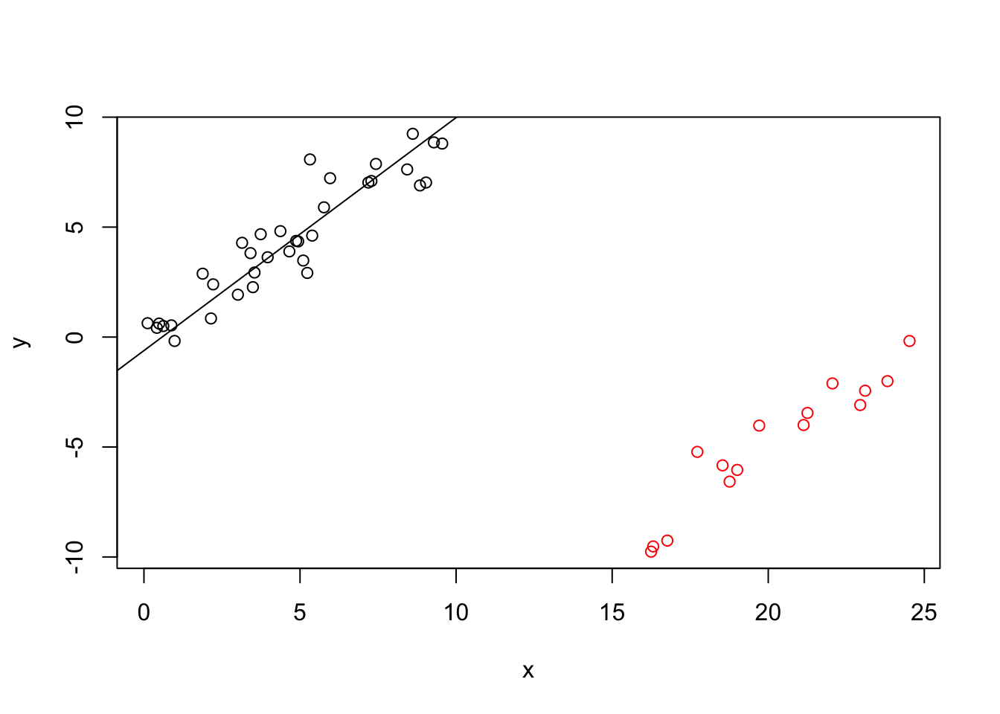

Section 19 Efficiency of Robust Estimators
In theoretical statistics, efficiency is a measure of quality of an estimator. A more efficient estimator achieves smaller estimation error for a given number of samples. Here we give an informal introduction to the topic of efficiency and discuss the efficiency of different methods for linear regression.
19.1 Efficiency
In the section about the Mean Squared Error we have seen that \[\begin{equation*} \mathop{\mathrm{MSE}}\nolimits\bigl( \hat\theta \bigr) = \mathop{\mathrm{Var}}\bigl( \hat\theta \bigr) + \mathop{\mathrm{bias}}\bigl( \hat\theta \bigr)^2 \end{equation*}\] can be used as a measure for the estimation error of an estimator \(\hat\theta\), and if the estimator is unbiased, this expression simplifies to \[\begin{equation*} \mathop{\mathrm{MSE}}\nolimits\bigl( \hat\theta \bigr) = \mathop{\mathrm{Var}}\bigl( \hat\theta \bigr). \end{equation*}\] Thus, “good” estimators will have small variance. Instead of considering the full definition from theoretical statistics (which requires the concept of Fisher information), here we simply consider \[\begin{equation*} \mathrm{efficiency}(\hat\theta) = \frac{1}{\mathop{\mathrm{Var}}(\hat\theta)} \end{equation*}\] as a measure for the efficiency of an estimator. We will use this measure of efficiency to compare different estimators.
Example 19.1 Both the sample mean and the sample median can be used as estimators for the population mean. Here we show that the median has lower efficiency than the mean.
Suppose \(X_1,\ldots, X_n\) are i.i.d. with CDF \(F(x)\), i.e. \(P(X_i \leq x) = F(x)\). As before, let \(X_{(1)} \leq \cdots \leq X_{(n)}\) be the samples arranged in order of increasing value. Then the distribution of \(X_{(k)}\) has CDF \[\begin{equation*} P(X_{(k)} \leq x) = \sum_{i=k}^n {n\choose i} F(x)^i \bigl(1-F(x)\bigr)^{n-i}, \end{equation*}\] since \(X_{(k)} \leq x\) requires at least \(k\) out of \(n\) samples to be less than or equal to \(x\). If we differentiate this (using product rule and chain rule) we get the density of \(X_{(k)}\): \[\begin{align*} f_{(k)}(x) &= \frac{d}{dx} P(X_{(k)} \leq x) \\ &= \cdots \\ &= f(x)\frac{n!}{(n-k)! (k-1)!} F(x)^{k-1}\bigl(1-F(x)\bigr)^{n-k}. \end{align*}\]
For simplicity we assume that \(n\) is odd, say \(n = 2m+1\). In this case the median is \(X_\mathrm{median} = X_{(m+1)}\). Thus, the density of the median is \[\begin{align*} f_\mathrm{median}(x) &= f_{(m+1)}(x) \\ &= f(x)\frac{n!}{(n-m-1)! m!} F(x)^m\bigl(1-F(x)\bigr)^{n-m-1} \\ &= f(x)\frac{n!}{m! m!} F(x)^m\bigl(1-F(x)\bigr)^m. \end{align*}\] This density can be used to understand the behaviour of the median.
Now assume that \(X_1, \ldots, X_n \sim \mathcal{N}(\mu, \sigma^2)\), i.e. the density is \[\begin{equation*} f(x) = \frac{1}{\sqrt{2\pi\sigma^2}} \exp\Bigl( - \frac{(x-\mu)^2}{2\sigma^2} \Bigr) \end{equation*}\] and the CDF is \[\begin{equation*} F(x) = \Phi\Bigl( \frac{x - \mu}{\sigma} \Bigr), \end{equation*}\] where \(\Phi\) is the CDF of the standard normal distribution. In this case we know that \[\begin{equation*} \mathop{\mathrm{Var}}\bigl( \overline X \bigr) = \frac{\sigma^2}{n}. \end{equation*}\] For comparison, we can use the density of \(X_\mathrm{median}\) to show (in a series of complicated steps) that \[\begin{equation*} \mathop{\mathrm{Var}}\bigl( X_\mathrm{median} \bigr) \sim \frac{\pi}{2} \frac{\sigma^2}{n}, \end{equation*}\] as \(n\to\infty\). Thus, for large \(n\), the relative efficiency of the median compared to the mean is \[\begin{align*} \frac{\mathrm{efficiency}(X_\mathrm{median})}{\mathrm{efficiency}(\overline{X})} &= \frac{\mathop{\mathrm{Var}}\bigl( \overline X \bigr)}{\mathop{\mathrm{Var}}\bigl( X_\mathrm{median} \bigr)} = \frac{\frac{\sigma^2}{n}}{\frac{\pi}{2} \frac{\sigma^2}{n}} \\ &= \frac{2}{\pi} = 0.637. \end{align*}\] Thus, the sample median is a less efficient estimator for the mean than the sample mean is.
The situation in the example carries over to linear regression: more robust estimators tend to be less efficient, and there is a trade-off between robustness and efficiency. Without proof, here we list some examples of this principle:
One can show that usually the variance of the least squares estimator decreases proportionally to \(1 / n\), and thus the efficiency of the least squares estimator increases proportionally to \(n\).
The value \(t\) in Huber’s method can be used to control the balance between robustness and efficiency. As \(t\to\infty\), the method converges to least squares regression and becomes less robust, but at the same time efficiency increases. Huber suggests the value \(t = 1.345\sigma\) and showed that for this choice the method is \(95\%\) efficient for large \(n\), compared to least squares regression.
Similarly, the parameter \(a\) in Tukey’s Bisquare Method controls the trade-off between robustness and efficiency, with smaller \(a\) leading to a more robust method. In the literature it is suggested that \(a = 4.685 \sigma\) leads to \(95\%\) efficiency for large \(n\), compared to least squares regression.
The efficiency of the least absolute values estimator can be shown to be \(64\%\).
19.2 Robust estimators
As shown in section 18, M-estimators (both redescending and non-redescending) have breakdown point \(1/n\) because a single \(x\)-space outlier with high leverage can cause breakdown. We now consider two estimators which have a higher breakdown point, but lower efficiency.
19.2.1 Least Median of Squares
Rather than minimise the sum of the residual sum of squares (or a weighted version of it), this estimator minimises the median of squared residuals. The estimate is given by \[\begin{equation*} \hat\beta^\mathrm{(LMS)} := \mathop{\mathrm{arg\,min}}\limits_\beta \mathop{\mathrm{median}}_{i\in\{1,\ldots,n\}} \bigl( y_i- x_i^T \beta \bigr)^2, \end{equation*}\] where \(x_1, \ldots, x_n\) are the rows of the design matrix \(X\). This is very robust with respect to outliers, both in \(x\)-direction and \(y\)-directions: Since the median is used instead of the sum, up to half of the squared residuals can increase to infinity while the estimate stays bounded. Thus the asymptotic breakdown point of the method is \(1/2\).
The least median of squares method has poor asymptotic efficiency \(n^{2/3}\). In the limit, the relative efficiency compared to ordinary least squares is \[\begin{equation*} \frac{\mathrm{efficiency}(\hat\beta^\mathrm{(LMS)})}{\mathrm{efficiency}(\hat\beta^\mathrm{(LSQ)})} \propto \frac{n^{2/3}}{n} \longrightarrow 0 \end{equation*}\] as \(n\to\infty\).
Example 19.2 The following code computes an LMS regression estimate. We introduce artifical outliers by shifting \(30\%\) of the data to the bottom right. These artificial outliers are represented by the red circles in the plot.
library("MASS") # for lqs()
set.seed(20211207)
n <- 50
x <- runif(n, 0, 10)
y <- x + rnorm(n)
# add 30% outliers
n.ol <- floor(0.3*n)
idx <- sample.int(n, n.ol)
x[idx] <- x[idx] + 15
y[idx] <- y[idx] - 10
m <- lqs(y~x, method="lms")
plot(x, y, col = ifelse(1:n %in% idx, "red", "black"))
abline(m)
19.2.2 Least Trimmed Squares
This takes as its objective function the sum of \(h\) smallest squared residuals and was proposed as a remedy to the low asymptotic efficiency of LMS. The least trimmed squares estimator \(\hat\beta^\mathrm{(LTS)}\) is defined as \[\begin{equation*} \hat\beta^\mathrm{(LTS)} := \mathop{\mathrm{arg\,min}}\limits_\beta \sum_{i=1}^k r_{[i]}^2(\beta), \end{equation*}\] where \(r_{[i]}^2(\beta)\) represents the \(i\)th smallest value amongst \(r_i(\beta)^2 = \bigl( y_i- x_i^T\beta \bigr)^2\).
The value \(k\) controls the trade-off between robustness and efficiency and the value must satisfy \(n/2 < k \leq n\). For a given \(k\) the method can tolerate \(n-k\) outliers. The bounday case \(k=n\) corresponds to the ordinary least squares method. The breakdown point of the method is \((n - k +1)/n\).
Computing the LTS estimate is a non-trivial problem, which involves fitting the least-squares estimate to a carefully chosen subset of the samples.
Example 19.3 The following code computes an LTS regression estimate. The data is the same as in the previous example.
m <- lqs(y~x, method = "lts", quantile = floor(n/2)+1)
plot(x, y, col = ifelse(1:n %in% idx, "red", "black"))
abline(m)
One can show that LTS has an efficiency of approximately \(0.08\) compared to ordinary least squares regression.
Summary
- In this section we have informally discussed the efficiency of different estimators.
- We have introduced the Least Median of Squares estimator.
- We have introduced the Least Trimmed Squares estimator.